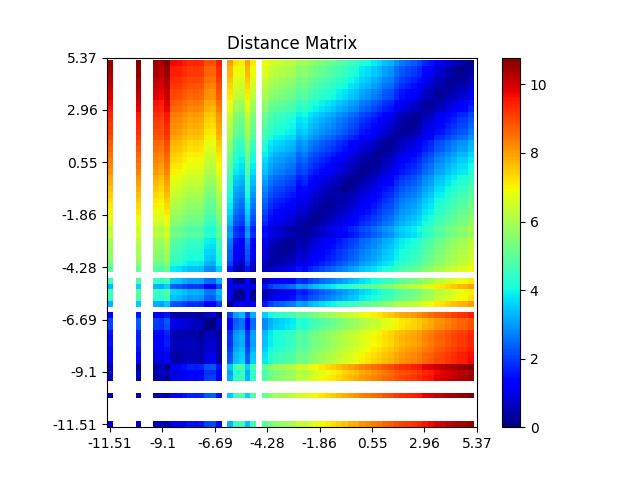

plot_similarity_matrix#
- class imbal.regression.plot_similarity_matrix(model, x, y, representation_layer_index=-2, unit_representation=False, cmap='jet', bins=64, ticks=10, save_figure=None)#
Bases:
Plots and displays a comparison of the true labels and the predicted labels for regression data. Points plotted are (true, prediction) for each label/prediction pair, such that a perfect prediction would fall precisely on the line \(y=x\). Prediction-label pairs will be plotted in the same order as supplied to the function.
- Parameters:
model – The TensorFlow model whose representation space you wish to visualize.
x – The data you wish to generate a similarity matrix for.
y – The corresponding labels for the provided data, as a column vector. These labels are used to sort and bin the provided data.
representation_layer_index – Optional, default \(-2\). The index of the layer of your model to extract the representation from. Defaults to the second to last layer of the provided model.
unit_representation – Optional, default
False. Whether the provided model uses a unit hypersphere representation. If set toTrue, cosine similarity will be used to compute the similarity between representations as opposed to distance.cmap – Optional, default
'jet'. The matplotlib colormap to use. See matplotlib’s documentation for a list of available colormaps.bins – Optional, default
64. The number of bins to use across the label range. The lower the amount of bins, the more coarse the resulting matrix will be, but the faster it will be generated. A higher amount of bins produces a more fine-grain matrix, but takes longer to generate.ticks – Optional, default
10. The number of label ticks to plots along each axis of the generated matrix.save_figure – Optional, default
None. If set to a string, will save the resultant plot to the specified path.
Example:
from imbal.regression import plot_similarity_matrix import numpy as np model = tf.keras.models.load_model('model.keras') x = np.random.randn(100, 100) # or some other data y = np.random.randn(100, 1) # or some other labels # Plots the similarity matrix and saves it to "similarity_matrix.png" plot_similarity_matrix( model, x, y, save_figure="similarity_matrix.png" )
The code above will produce a plot similar to the following:
